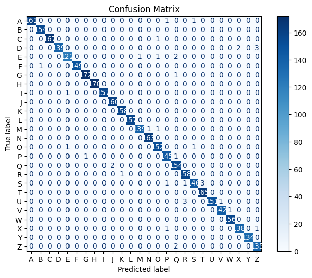

The training script writes these files to this folder (reports/):
evaluation_report.txt — text summary with accuracy and classification report.confusion_matrix.png — confusion matrix visualization.predictions.csv — test set features with y_true and y_pred.If present, this image shows how predicted classes compare to true labels:
If available, the text report is shown below:
Loading evaluation_report.txt ...